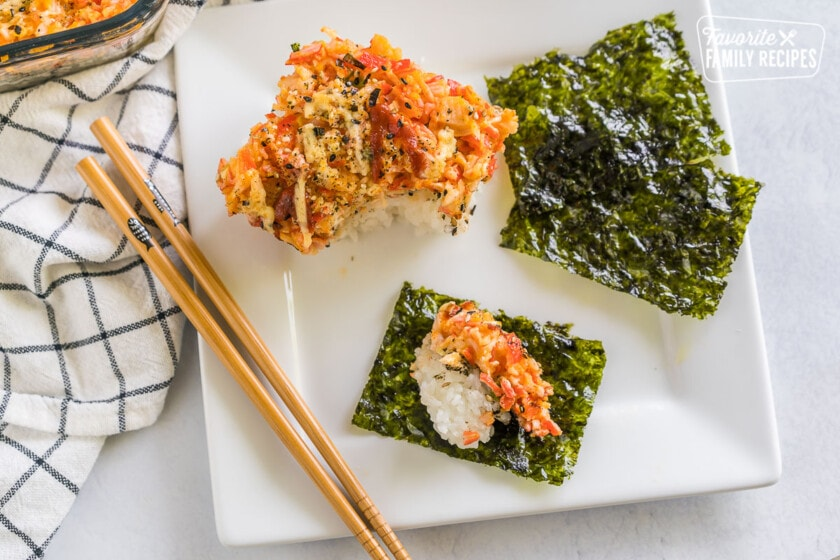

Sushi Bake Recipe

Description
Sushi Bake is basically a California roll in casserole form. Layers
of rice, seasonings, and fillings get broiled in the oven to make
a warm, creamy dish with amazing flavor. The best part about this
recipe is that it’s super easy to make and even easier to eat! It
tastes better than store-bought sushi rolls because you can
customize your own sushi bake with whatever ingredients you have
on hand. You can even make it vegetarian by replacing the fish
with tofu or vegetables such as carrots or zucchini slices.
Ingredients
- 1 1/2 cups sushi rice
- 3 Tbps. rice vinegar
- 1 Tsp. salt
- 2 Tsp. sugar
- 1/2 lbs. imitation crab meat
- 1 Tbsp. sriracha
- 1/2 Tsp. wasabi
- 1 1/2 oz. cream cheese
- 2 green onions chopped
- 1/2 cup kewpie mayo
- Furikake seasoning to taste
- Seawood snacks for serving
Steps
- Cook rice according to package directions. While rice is
cooking, finely shred the imitation crab and add that to
a bowl with sriracha, wasabi, green onion, cream cheese,
and kewpie mayo. Stir to combine.
- When the rice is done cooking, add rice vinegar, salt and
sugar. Stir to combine
- Press the rice into the bottom of an 8x8 baking dish.
Sprinkle with furikake seasoning.
- Spread the crab mixture on top of the rice and sprinkle with
more furikake. Drizzle with extra sriracha and kewpie mayo
if desired.
- Broil for 10 minutes.
- Serve with seawood snacls.